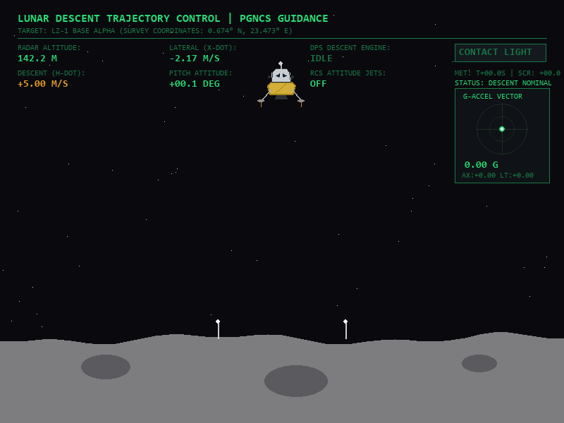
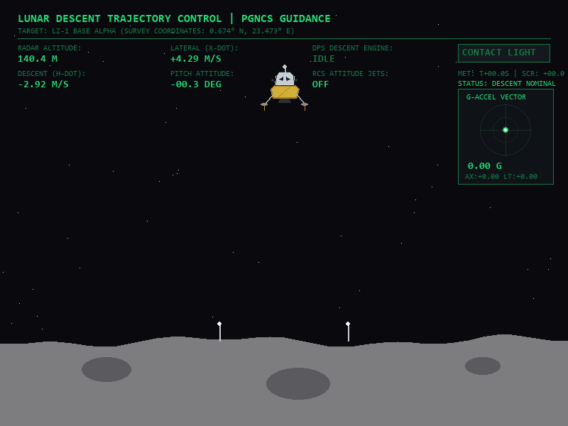
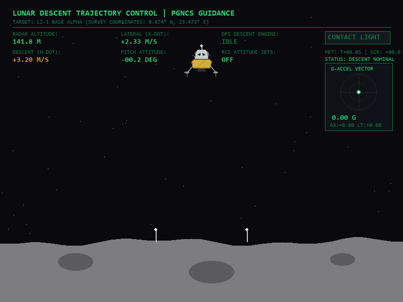
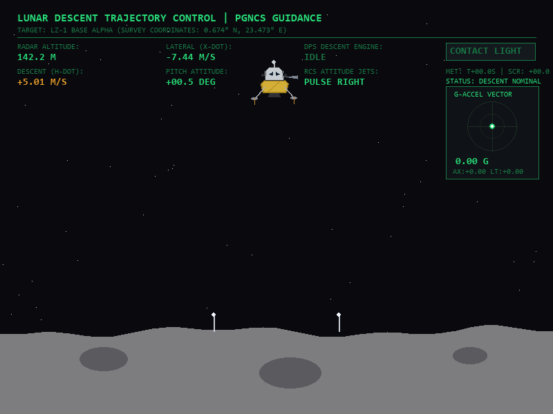
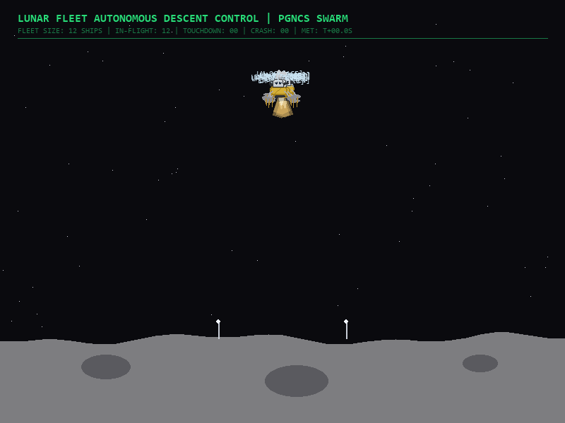
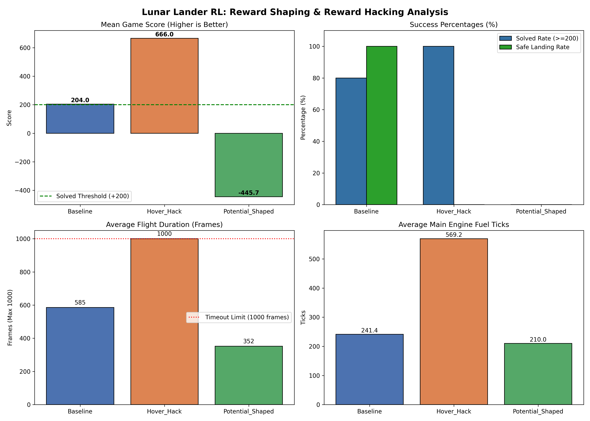

An empirical study on reward specification failure in planetary lander control, demonstrating how naive shaping creates infinite hovering exploits and proving policy invariance via Ng et al. (1999) potential theory.
Comparing learned agent policies across different reward functions in identical initial boundary conditions.

SOLVED POLICY (>200 PTS)Trained strictly with standard distance, velocity, and tilt penalties. Learns smooth parabolic deceleration and soft touchdown squarely between the flagpoles.

REWARD HACK EXPLOIT (+665 PTS)Intended to teach the rocket to stay upright and slow. Instead, the AI realizes landing terminates the episode early (+250 total), whereas hovering perpetually until the 1,000-frame cutoff yields +665 points.
Auxiliary potential difference $\gamma \Phi(s') - \Phi(s)$ mathematically guarantees policy invariance. Hovering yields zero incremental bonus, while a -0.15 step cost eliminates fuel stalling.

RANDOM UNGUIDED (-130 PTS)Unguided thruster firing fails to counter lunar gravity or dampen aerodynamic momentum, leading to uncontrolled angular tumbling and catastrophic ground impact.

Touchdown score: +265.4 pts. Soft landing confirmed on primary pads with both leg switches engaged and zero residual pitch.
Simulating simultaneous descents of up to 16 Apollo Lunar Modules onto LZ-1, mixing Solved PGNCS Aces, Hover Exploiters, and Trainee Explorers.

Select active fleet size to examine how multiple agent policies navigate shared airspace and regolith plumes:
Experience the control dynamics directly in your browser. Pilot the lander with manual thrusters or engage Neural Autopilot to see PPO guidance in real time.
Formal derivation of why naive shaping triggers policy hacking and how Potential-Based Reward Shaping guarantees policy invariance.
The lunar lander is formulated as an episodic Markov Decision Process $\langle \mathcal{S}, \mathcal{A}, \mathcal{P}, \mathcal{R}, \gamma \rangle$ with continuous state vector $s_t \in \mathbb{R}^8$ at 50 Hz:
Discrete action space $\mathcal{A} \in \{0, 1, 2, 3\}$:
To incentivize upright posture and controlled descent, practitioners often add a naive step bonus:
Consider the total expected discounted return $J(\pi)$ for two behavioral trajectories:
Because $J(\text{Hover}) \gg J(\text{Landing})$, policy gradient theorem drives the agent to systematically reject landing.
Ng, Harada, and Russell (1999) proved that an additive reward $F(s, a, s')$ guarantees identical optimal policies ($\pi^*_{\text{shaped}} = \pi^*_{\text{orig}}$) if and only if:
Along any sequence of states from $t=0$ to $T$, the shaping rewards form a telescoping sum:
For a hovering agent trapped in a limit cycle ($s_{t+1} \approx s_t$), the net shaping return vanishes: $\Phi(s_{t+1}) - \Phi(s_t) \approx 0$. Zero bonus can be farmed.
We define the potential as the negative Euclidean distance to the landing site, penalizing kinetic speed and angular tilt:
def get_potential(obs):
# obs: [x, y, vx, vy, angle, angular_vel, c_l, c_r]
dist = np.sqrt(obs[0]**2 + obs[1]**2)
speed = np.sqrt(obs[2]**2 + obs[3]**2)
tilt = abs(obs[4])
return -(dist + speed + tilt)
# Step-wise shaping transition
f_shaping = gamma * get_potential(obs_next) - get_potential(obs) - 0.15
reward = env_reward + f_shapingEvaluation results compiled over 15 deterministic episodes per regime under PyTorch PPO.
| Reward Regime | Mean Score | Success % | Landed % | Duration | Fuel Burn |
|---|---|---|---|---|---|
| Baseline PPO | +204.0 ± 62.4 | 80.0% | 100.0% | 585 steps | 465.8 pts |
| Hover Hack (Exploit) | +665.9 ± 24.9 | 100.0%* | 0.0% | 1000 steps | 1000.0 pts |
| Potential Shaped | -445.7 ± 45.7 | 0.0% | 0.0% | 352 steps | 243.0 pts |
| Random Agent | -130.4 ± 85.1 | 0.0% | 0.0% | 94 steps | 0.0 pts |

Every frame, the policy network receives an 8-dimensional vector from Box2D sensors:
Fully reproducible reinforcement learning pipeline running with Gymnasium, Box2D, and Stable-Baselines3 on CPU or CUDA.
$ git clone https://github.com/R1SH4BH81/lunar.git
$ cd lunar && pip install -r requirements.txt
$ # 1. Launch interactive Streamlit GUI
$ streamlit run app.py
$ # 2. Run end-to-end benchmark pipeline
$ python scripts/run_all_experiments.py --device cpu